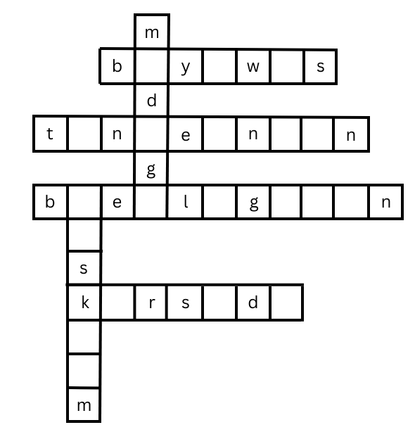

LEKSYON 2
Leksyon 2 Ako ag ro Akong Pamilya: Healty Habit
Tun-an ag Isugid.
Ueobrahon 1
basaha ro mga pamisaea. Kopyaha ro mga pangngaean sa kada pamisaea. Dayon, isugid kon raya hay pangaean nga mahuyap o pangaean nga indi mahuyap. Isueat sa papel ro imong sabat sa nakaigo nga kolum sa inyong papel.
1. Ro tubi halin sa busay hay maeamig ag malimpyo.
2. Nagbutang si Ana it puea nga laso sa anang buhok.
3. Nagakinahangean si Nay Sally it sangka bote nga mantika para sa anang ginaeaha.
4. Nagdaea si tatay it mga tinuean-on ag prutas para pandulse.
5. Nagdaea si nanay it sanga lata nga gatas ag sangka maeukong nga otmil (Oatmeal)
Pangngaaean nga mahuyap
________________________________________
________________________________________
________________________________________
Pangngaaean nga indi mahuyap
________________________________________
________________________________________
________________________________________
Tandaan!
• Ro Pangngaean hay pwedeng hueayon sa daywa: mga pangaean nga MAHUYAP ag mga pangaean nga INDI MAHUYAP.
• Ginatawag nga pangngaean nga mahuyap (count nouns) ro mga pangngaean nga mahuyap it tig-sambilog o binato bato. Ginadungangan it bisaea nga "mga" ro pangngaean nga "sambilog" ro kahueugan (singular) agud maporma ro pangngaean nga "abu" rayon ro kahueugan (Plural)
Halimbawa:
bueak - mga bueak
bulador - mga bulador
daean - mga daean
amigo - mga amigo
• Ro mga pangngaean nga indi mahuyap (mass noun) hay mga butang nga indi gid mahuyap it tig-sambilog o binato bato. Pilang halimbawa sa mga pangaean ngara hay:
bugas arina mantika asukar
Magtan-aw sa imong palibot. Makatao ka baea it mga halibawa it mga pangngaean nga mahuyap (count nouns) ag mga pangngaean nga indi mahuyap (mass nouns)? Isueat ra sa mga nagakaigo nga kolum sa inyong papel.
| Mga Pangngaean nga Mahuyap (Count Nouns) | Mga Pangngaean nga Indi Mahuyap (Mass Nouns) |
|---|---|
Basaha it mayad ro kada pamisaea. Pili-a ro bisaea halin sa kahon nga magakumpleto ku ideya it pamisaea. Dayom, isugid kon ro bisaea hay pangngaean nga mahuyap o pangngaean nga indi mahuyap. Isueat ro imong sabat sa linya.
mga kamatis lusyon kutsara
mga mangga kape gatas tubi
Mga Pangngaen nga indi Mahuyap 1. Ro pag-inom it maabu nga kape hay makapabugtaw kimo.
____________________________________ 2. gamitan ko it ___________ ro akon nga panit agud indi magmaea.
____________________________________ 3. ro mga Pilipino hay nagakaon nga may ___________ ag tinidor.
____________________________________ 4. Ro pag-inom it sangkabaso ga ___________ sa sang adlaw hay mayad sa imong tue-an.
____________________________________ 5. Kinahangean naton nga mag-inom it waeong ka baso it ___________ hambae it doktor.
____________________________________ 6. Nagakinahangean su nanay it limang ___________________ para sa anang ginaeaha.
ni: Nelia D. Bamba
"Bip, bip, bip!" "Iya eon ro bus!" nagdaeaguso sa pagbitbit it andang mga bag ro mga unga.
"Mauli eon kita, Byernes eon man!" hambae ku mga unga.
"Mga unga, tanan hay saka eon sa saeakyan," Indi eot a mag-andar ro makina.
"Maulihi eang kita it sangkiri sa pag-uli, pero indi kamo mahawag hay maisut malang ra nga problema". Mabaskog nga nagpanghayhay ro mga unga. "Eaum ko hay makatan-aw eon ako ku akong paborito nga paguwa sa telibisyon" hambae ni Ashlyn.
"Wow! Tan-aw sa guwa! Tanan kamo, tan-aw sa guwa! Tan-awa ratong mga melon, mga suwa, mga pinya, ag mga bayawas sa baealigyaan. Preska gid a tan-awon," hambae ni Belle.
"Owa una ro mga prutas ngaron kahapon," hambae ni Amiel.
"Tyempo eon it pag-ani," hambae ni Tay Peping. "Ratong mga prutas hay gin- ani kahapon ku mga tawo sa andang eanas."
"Kunta nakita ni nanay rayang mga prutas. Sigurado nga mabakae gid imaw, " hambae ni Miguel. "Naila gid ako magkaon it mga prutas. Mayad ra sa atong eawas," hambae ni nanay.
"Oy, hadumduman ninyo ro atong gin-obra sa klase kainang agahon?" hambae ni Akia.
"Ay huo, nag-obra kita it rap ag chant sa klase ni Mam Reyes hanungod sa mga pagkaon nga mayad sa atong eawas," sabat ni Aaron.
"Imbis nga tak-an kita samtang nagahueat, musyon ma-rap kita," singgit ni Xavier. DAyon, nag-umpisa imaw sa pag-rap:
"Mga melon, mga melon, maduga, maduga, maduga. Mga melon nga maduga, maduga nga mga melon (Tama!)"
Naila gid ako it maduga nga melon.
Duga, duga, duro nga duga. Melon nga maduga. (Yes, yes,yo!)
Ro iba nga mga unga hay nag-intra man sa pag-rap nga ginahambae ro pangaean ku tanan nga mga prutas nga andang nakit-an sa baealigyaan. Owa gid kanda it nakapan-o nga nag andar eon it uman ro saeakyan sa paghatod kanda pauli.
Sabtan ro masunod nga pangutana.
1. Sin-o ro mga tawo sa istorya?
2. Ano ro andang gina-obra sa saeakyan? Ham-an?
3. Ano ro gin-obra ot mga unga samtang una sa sueod it saeakyan?
Ueubrahon 4
Isueat ro kada pangaean sa nakaigo nga kahon. Ubrahon ra sa eain nga papel.
a. sangkabote nga mantika
b. sangkakaeaha nga biko
c. sambilog nga mansanas
d. sangkatasa nga asukar
e. napueo nga mangga
f. sangputos nga palaman
g. sambilog nga saging
h. sangkagarapon nga asin
i. sangkabaso nga juice
j. tatlong ka kahil
Ueubrahon 5
Magpili it limang ka grupo it mga bisaea (phrase) halin sa listahan nga makit-an sa ueubrahon 4. Isueat ro imong kaugalingon nga pamisaea gamit ro mga pangngaean
1. _______________________________
2. _______________________________
3. _______________________________
4. _______________________________
5. _______________________________
Tun-ag Isugid!
Basaha ro paragrapo halin sa istorya nga "Paibabaw, Paibabaw ag Paeayo" (Up, Up, and Away).
Adlaw nga Sabado. Sanday Tatay ag Marlon hay nangin magkaibahan sa bilog sa adlaw. Nagtinikang sanda sa kaeanasan ag mabato nga daeanon hasta nga nakaabot sanda sa kahilamnan. Nalipay gid it duro si Marlon!
Siin natabo ro istorya?
Kan -o ra natabo?
Siin ro lugar (setting) it istorya?
Ano nga parte it istorya ro nagasugid kon kan-o ag siin natabo ro istorya?
Tandaan!
Ro lugar (setting) it istorya hay nasugid ku:
• lugar kon siin natabo ro istorya,
• oras kon kan-o natabo ro istorya
Ro lugar (setting) it istorya hay nagasabat sa mga pangutana nga siin ag kan-o/hin-uno
Ueubrahon 6
Pili-a ro tama nga lugar (setting) para sa masunod nga mga istorya. Isueat ro letra it tama nga sabat sa inyo nga papel.
1. Pyesta
Siin ra pwedeng matabo? __________
a. sa baryo c. sa baybay
b. sa kantina
Hin-uno ra pwede nga matabo? __________
a. Tyempo it Paskwa c. bisan hin-uo
b. Pagbukas it klase
2. Istorya hanungod sa mga Engkantada (Fairy Tale)
Siin ra pwedeng matabo? __________
a. eskuylahan c. zoo
b. palasyo
Hin-uno ra pwede nga matabo? __________
a. nakataliwan eon c. matabo paeang
b. nagakatabo makaron
3. Paindis-indis o Pakontes it Kanta sa Eskuylahan
Siin ra pwedeng matabo? __________
a. sa parti
b. sa isaeang ka programa
c. sa opisina
Hin-uno ra pwede nga matabo? __________
a. alas-12 it tungang-gabii
b. truadlaw
c. pagkatapos it klase
Ueubrahon 7
Sabtan ro mga kahon it tama nga pagbilinato (spelling) it mga bisaea halin sa istorya nga igadikta it maestro o maestra. Isueat ro sabat sa papel.
Basaha ro istorya ag sabtan ro masunod nga mga pangutana.
Nagdaeagan si Brent paadto sa baraka. Mabakae imaw it asin nga pagagamiton ni nanay na sa pag-eaha it ilabas. Nakita na ro anang amigo nga si Rolly sa baraka. Ginpakita kana ni Rolly ro anang bag-ong hampangan nga robot. Naila gid a si Brent sa hampangan. Sa hinali, ginpangutana imaw ni Nay Maring. "Mabakae ka?" Gintueok eang ni Brent si Nay Maring. Halipatan na eon ro ginapabakae kana ni nanay na. Ginpangutana imaw ni Nay Maring kon ano ro gina-obra ni nanay na. Nagahiyum-hiyum nga nagsabat si Brent. "Nagaeaha imaw it ilabas. Kinahangean ko magbakae it samputos nga asin." Sa anang paghalin sa baraka, nagpasaeamat si Brent kay Nay Maring sa pagpadumdum kana.
Ano ro ay Brent nga problema?
Paalin na ginsolbar ro anang problema?
Ano tawgon ro parte it istorya nga nagasugid sa problema it tawuhan ag kon paalin na ra ginsolbar?
Ro hitabo (Plot) hay isaeang ka elemento it istorya
May problema ra ag anang solusyon.
Ro problema hay nagasugid hanungod sa sitwasyon nga ginapangatubang ku mga tawuhan sa istorya.
Ro solusyon hay nagasugid kon paalin ginpangatubang ag ginsulbar ku mga tawuhan sa istorya ro problema.
Basaha ro matag-ud nga istorya istorya sa idaeum. Tinguha-i nga makit-an ro problema sa istorya ag ro anang solusyon.
Paragrapo A
Ginbisitahan nanday Jenny ag Joyce ro ay lolo nanda nga eanas.
"Naila gidd a ako sa lugar ngara," hambae ni Jenny. "Makangawa-ngawa ro mga kahoy!" hambae ni Joyce. "Abu-abu ra it bunga. Musyon sa akong paborito nga kahoy," dugang ni Joyce. "Kaabu kara ro anang bunga! Gusto ko nga magbuoe it pilang bilog ugaling, indi ko maabot."
Ano ro problema?
_______________________________________
_______________________________________
Ano ro solusyon?
_______________________________________
_______________________________________
Paragrapo B
"Hara, daeha ro kuhit," hambae ni Jenny. Isaea, daywa, nahueog nga mga mangga. "Nakabuoe ako it daywa!" hambae ni Joyce.
"Tan-awa ratong mga pato sa sapa. Kanami gid a sanda tan-awon" hambae ni Jenny. Nagpaeapit pa gid imaw. Nahukas ro sanglingit ku anang sinelas ag inanod paeayo. "Ay abaw, ro akong sinelas!," singgit ni Jenny.
"Pabay-i lang ron," hambae ni Joyce. "May sang pares man ako nga sinelas sa bag", dugang na.
Ano ro problema?
_______________________________________
_______________________________________
Ano ro solusyon?
_______________________________________
_______________________________________
Mauno mo kakilaea ro imong kaugalingon? Pun-an ro masunod nga listahan it nakgakaigo nga impurmasyon. Sabtan it kumpleto nga pamisaea.
Ano ro imong kumpleto nga pangaean?
Ano ro imong paborito nga kolor?
Pila kamo nga magmaeanghud?
Ano ro inyong mga paborito?
Ano ro inyong perming ginakaon sa pamahaw?
Ano ro inyong nailaan nga kan-on sa ilabas?
Ano ro imong pinakamanami nga pagkaon sa ihapon?
Padumdum: SABTAN IT KUMPLETO NGA PAMISAEA
Exercise # 1
Kupyahon ag pun-an ro mga kahon it tama nga mga pangngaean. Dayon. magsueat it lima nga (5) ka pamisaea gamit ro mga pangaean sa idaeum.
1. sangka bote nga ketsup
2. itlog
3. sangkilo nga harina
4. karne
5. gulaman
6. pipino
7. sanka tasa nga eanggaw
8. mansanas
9. karot
10. kahil
Mga Pamisaea:
1. _________________________________________
2. _________________________________________
3. _________________________________________
4. _________________________________________
5. _________________________________________